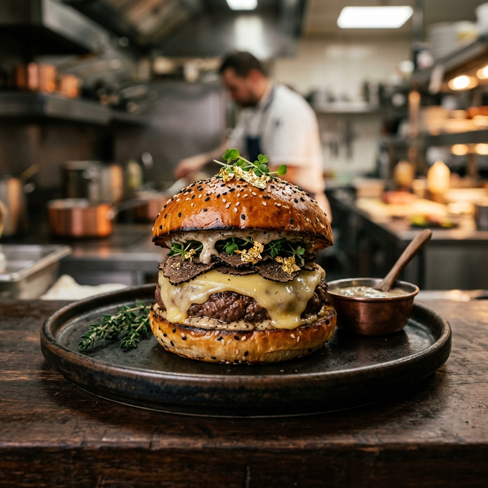
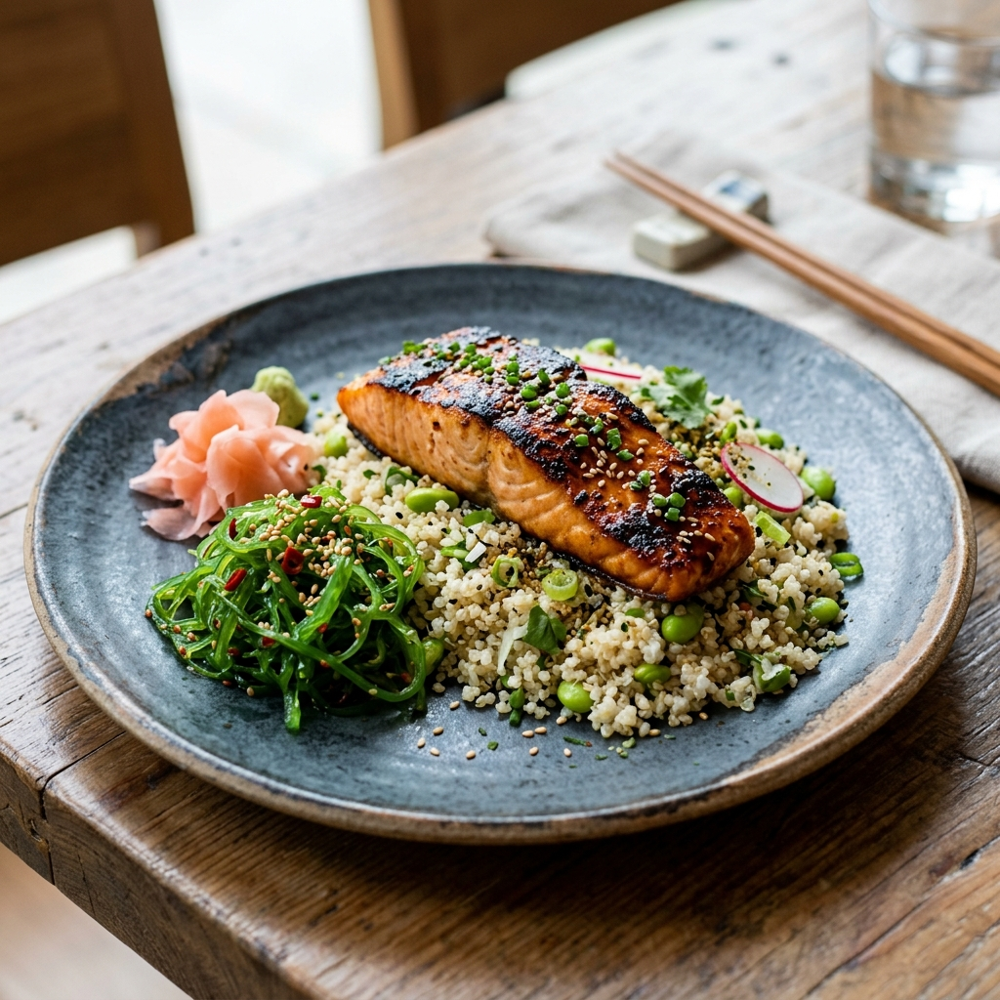

Ghost Kitchen
Gazette.
Exploring the intersection of culinary art, transport technology, and sustainable dining — one story at a time.
Featured

Technology · Future
Why Virtual Kitchens Are The New Five-Star Standard
An in-depth look at how removing the physical dining room allows us to reallocate 100% of resources into what truly matters — the food, the science, and the delivery.
Read ManifestoRecipes

March 15, 2026
The Secret Spices Behind Our Signature Rub
We reveal the 12 specific botanical nodes that give our Wagyu its iconic sear — a flavor profile four years in the making, shared for the first time.
Kitchen Tech
March 10, 2026
How Our AI Kitchen Predicts Your Order Before You Do
A deep dive into the demand-prediction model that pre-stages ingredients and cuts average wait times from 45 to 28 minutes — without compromising quality.
Sustainability
March 5, 2026
How We Achieved Near-Zero Food Waste in 2025
Our data-driven inventory system, supplier partnerships, and real-time menu adjustments took food waste from 18% to under 2% in a single year.
Culture
Feb 28, 2026
Why We Built a Restaurant Without a Dining Room
Chef Marco Rossi shares the counter-intuitive philosophy that led him to abandon a Michelin-starred restaurant career to pioneer ghost kitchen dining.
Food Science

Feb 20, 2026
The Thermal Science of Keeping Fries Crispy for 30 Minutes
We break down the physics, materials science, and obsessive testing that went into designing our proprietary InsulaTech packaging system.
Recipes

Feb 12, 2026
Building the Perfect Vegan Burger: A 3-Year Journey
Our plant-based chef Elena Vane documents the iterations, failures, and eureka moments that resulted in the Neo-Classic Burger — our most-ordered vegan item.